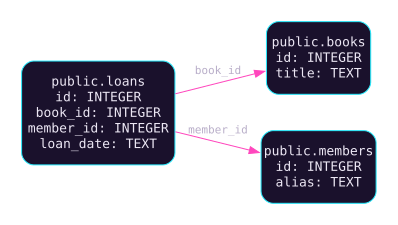

CASO DI STUDIO / SCHEMI & DATABASE
SQL Toolkit
Una fonte comune, risultati da verificare.
Uno strumento locale per progettare, validare e confrontare schemi database, con risultati ispezionabili prima di intervenire sui dati.
Workbench 0.4.0a1 · versione di sviluppo
DAL PROGRAMMA / SCHEMA DIMOSTRATIVO
Tre tabelle, due relazioni.
Nessun dato di biblioteca reale.


$ sqltoolkit validate schema.json
{
"tables": 3,
"valid": true
}Estratto della validazione reale; il report completo include anche l’impronta dello schema. L’ordine strutturale di creazione è books → members → loans.
La coerenza deve poter essere controllata.
Un modello di progettazione, lo schema SQL e la documentazione possono evolvere in direzioni diverse. Il lavoro è collegarli attraverso una rappresentazione condivisa.
Nel caso dimostrativo uso una piccola biblioteca: libri, membri e prestiti. L’obiettivo è importare lo schema, verificarne i riferimenti e produrre artefatti che si possano leggere e discutere.
- Esecuzione locale: nessuna credenziale o connessione a un database dell’utente per generare il risultato.
- Semantica dichiarata: tipi e funzionalità appartengono a un sottoinsieme esplicito.
- Errori prevedibili: una funzionalità non supportata viene rifiutata prima di scrivere output incompleto.
- Revisione possibile: differenze e piano strutturale restano artefatti da valutare.
02 / IL TRADE-OFF
Quale responsabilità assegnare allo strumento?
| Bivio | Scelta adottata | Conseguenza |
|---|---|---|
| Output diretti o modello condiviso | Importare nel modello dello schema | Diagramma, piano, documentazione e DDL partono dallo stesso ingresso validato. |
| Generazione o esecuzione | Produrre file da revisionare | Il chiamante può controllare il risultato prima di una decisione sul database. |
| Conversione permissiva o supporto esplicito | Rifiutare ciò che non è rappresentabile | Il sottoinsieme è più limitato, ma evita di perdere semantica senza segnalarlo. |
Un ingresso.
Più viste sullo stesso schema.
La CLI importa il DDL SQLite nella rappresentazione intermedia. Il modello contiene tabelle, colonne e vincoli; validazione e grafo delle dipendenze lo controllano prima del rendering.
- ImportazioneDDL SQLite → modello JSON
- Validazione e pianoRiferimenti, ordine e cicli
- ArtefattiDiagramma, documentazione, diff e DDL
I renderer per SQLite, PostgreSQL e SQL Server hanno limiti espliciti. Il piano strutturale non viene presentato come una migrazione eseguibile già approvata.
Lo schema passa.
Il riferimento invalido viene rifiutato.
Ho eseguito il DDL generato in un database SQLite temporaneo in memoria. Le tre tabelle sono state create e le due chiavi esterne risultano presenti.
Un prestito riferito a un libro e a un membro esistenti viene accettato. Un secondo prestito con book_id = 999, assente dalla tabella dei libri, produce un errore di integrità.
Scarica l’esito della prova SQLite ↓
Questa verifica riguarda il dataset dimostrativo e SQLite. Le prove già registrate su PostgreSQL e SQL Server restano distinte; non dimostrano una conversione generale fra tutti i dialetti.
Estendere il supporto senza perdere il contratto.
Restano da ampliare introspezione, importazione DDL e migrazione dei moduli storici sul modello condiviso. Il diff è un rapporto di revisione: non deduce automaticamente rinominazioni né esegue ALTER o DROP.
Il risultato attuale è un percorso offline verificabile, con un insieme dichiarato di funzionalità. Il passo successivo è aggiungere casi supportati insieme alle prove che ne controllano la semantica.
La decisione in breve: generare SQL prima di eseguirlo ↗Un progetto aperto alla discussione.
Il codice è conservato in un repository privato. Questa scheda riassume il lavoro e i suoi limiti a ottobre 2026.
Per parlare delle scelte progettuali o di una possibile collaborazione, scrivimi ↗.